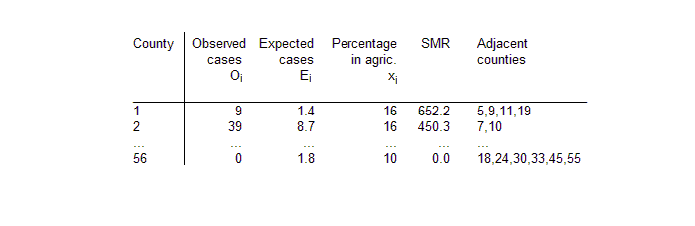
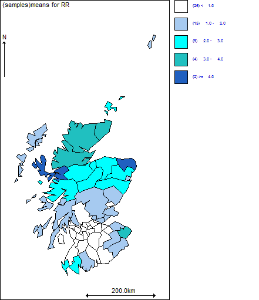
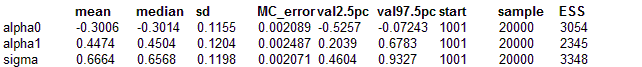

Conditional Autoregressive (CAR) models for disease mapping: Lip cancer in Scotland
The rates of lip cancer in 56 counties in Scotland have been analysed by Clayton and Kaldor (1987) and Breslow and Clayton (1993). The form of the data includes the observed and expected cases (expected numbers based on the population and its age and sex distribution in the county), a covariate measuring the percentage of the population engaged in agriculture, fishing, or forestry, and the "position'' of each county expressed as a list of adjacent counties.
We note that the extreme SMRs (Standardised Mortality Ratios) are based on very few cases.
We may smooth the raw SMRs by fitting a random-effects Poisson model allowing for spatial correlation, using the intrinsic conditional autoregressive (CAR) prior proposed by Besag, York and Mollie (1991). For the lip cancer example, the model may be written as:
O
i ~ Poisson(
μi)
log
μi = og E
i +
α0 +
α1x
i / 10 + b
i
where
α0 is an intercept term representing the baseline (log) relative risk of disease across the study region, x
i is the covariate "percentage of the population engaged in agriculture, fishing, or forestry" in district i, with associated regression coefficient
α1 and b
i is an area-specific random effect capturing the residual or unexplained (log) relative risk of disease in area i. We often think of b
i as representing the effect of latent (unobserved) risk factors.
To allow for spatial dependence between the random effects b
i in nearby areas, we may assume a CAR prior for these terms. Technical details, including parameterisation and a discussion of suitable hyperpriors for the parameters of this model, are given in
appendix 1. The
car.normal distribution may be used to fit this model. The code for the lip cancer data is given below.
Model model {
# Likelihood
for (i in 1 : N) {
O[i] ~ dpois(mu[i])
log(mu[i]) <- log(E[i]) + alpha0 + alpha1 * X[i]/10 + b[i]
# Area-specific relative risk (for maps)
RR[i] <- exp(alpha0 + alpha1 * X[i]/10 + b[i])
}
# CAR prior distribution for random effects:
b[1:N] ~ car.normal(adj[], weights[], num[], tau)
for(k in 1:sumNumNeigh) {
weights[k] <- 1
}
# Other priors:
alpha0 ~ dflat()
alpha1 ~ dnorm(0.0, 1.0E-5)
tau ~ dgamma(0.5, 0.0005) # prior on precision
sigma <- sqrt(1 / tau) # standard deviation
b.mean <- sum(b[])
}
Data
list(N = 56,
O = c( 9, 39, 11, 9, 15, 8, 26, 7, 6, 20,
13, 5, 3, 8, 17, 9, 2, 7, 9, 7,
16, 31, 11, 7, 19, 15, 7, 10, 16, 11,
5, 3, 7, 8, 11, 9, 11, 8, 6, 4,
10, 8, 2, 6, 19, 3, 2, 3, 28, 6,
1, 1, 1, 1, 0, 0),
E = c( 1.4, 8.7, 3.0, 2.5, 4.3, 2.4, 8.1, 2.3, 2.0, 6.6,
4.4, 1.8, 1.1, 3.3, 7.8, 4.6, 1.1, 4.2, 5.5, 4.4,
10.5,22.7, 8.8, 5.6,15.5,12.5, 6.0, 9.0,14.4,10.2,
4.8, 2.9, 7.0, 8.5,12.3,10.1,12.7, 9.4, 7.2, 5.3,
18.8,15.8, 4.3,14.6,50.7, 8.2, 5.6, 9.3,88.7,19.6,
3.4, 3.6, 5.7, 7.0, 4.2, 1.8),
X = c(16,16,10,24,10,24,10, 7, 7,16,
7,16,10,24, 7,16,10, 7, 7,10,
7,16,10, 7, 1, 1, 7, 7,10,10,
7,24,10, 7, 7, 0,10, 1,16, 0,
1,16,16, 0, 1, 7, 1, 1, 0, 1,
1, 0, 1, 1,16,10),
num = c(3, 2, 1, 3, 3, 0, 5, 0, 5, 4,
0, 2, 3, 3, 2, 6, 6, 6, 5, 3,
3, 2, 4, 8, 3, 3, 4, 4, 11, 6,
7, 3, 4, 9, 4, 2, 4, 6, 3, 4,
5, 5, 4, 5, 4, 6, 6, 4, 9, 2,
4, 4, 4, 5, 6, 5
),
adj = c(
19, 9, 5,
10, 7,
12,
28, 20, 18,
19, 12, 1,
17, 16, 13, 10, 2,
29, 23, 19, 17, 1,
22, 16, 7, 2,
5, 3,
19, 17, 7,
35, 32, 31,
29, 25,
29, 22, 21, 17, 10, 7,
29, 19, 16, 13, 9, 7,
56, 55, 33, 28, 20, 4,
17, 13, 9, 5, 1,
56, 18, 4,
50, 29, 16,
16, 10,
39, 34, 29, 9,
56, 55, 48, 47, 44, 31, 30, 27,
29, 26, 15,
43, 29, 25,
56, 32, 31, 24,
45, 33, 18, 4,
50, 43, 34, 26, 25, 23, 21, 17, 16, 15, 9,
55, 45, 44, 42, 38, 24,
47, 46, 35, 32, 27, 24, 14,
31, 27, 14,
55, 45, 28, 18,
54, 52, 51, 43, 42, 40, 39, 29, 23,
46, 37, 31, 14,
41, 37,
46, 41, 36, 35,
54, 51, 49, 44, 42, 30,
40, 34, 23,
52, 49, 39, 34,
53, 49, 46, 37, 36,
51, 43, 38, 34, 30,
42, 34, 29, 26,
49, 48, 38, 30, 24,
55, 33, 30, 28,
53, 47, 41, 37, 35, 31,
53, 49, 48, 46, 31, 24,
49, 47, 44, 24,
54, 53, 52, 48, 47, 44, 41, 40, 38,
29, 21,
54, 42, 38, 34,
54, 49, 40, 34,
49, 47, 46, 41,
52, 51, 49, 38, 34,
56, 45, 33, 30, 24, 18,
55, 27, 24, 20, 18
),
sumNumNeigh = 234)
Note that the data for the adjacency matrix (variables
adj,
num and
SumNumNeigh) have been generated using the
adj matrix option of the
Adjacency Tool menu in
GeoBUGS. By default, this treats islands as having no neighbours, and so the three areas representing the Orkneys, Shetland and the Outer Hebrides islands in Scotland have zero neighbours. You can
edit the adjacency map of Scotland to include these areas as neighbours if you wish. The
car.normal distribution sets the value of b
i equal to zero for areas i that are islands. Hence the posterior relative risks for the Orkneys, Shetland and the Outer Hebrides in the present example will just depend on the overall baseline rate
α0 and the covariate x
i. Alternatively, you could specify a
convolution prior for the area-specific random effects (Besag, York and Mollie 1991) which partitions the overall random effect for each area into the sum of a spatial component plus a non-spatial component. In this model, the islands will just have a non-spatial term for the random effect. See
example on lung cancer in a London Health Authority for details of this model.
Inits for chain 1
list(tau = 1, alpha0 = 0, alpha1 = 0)
Inits for chain 2
list(tau = 10.0, alpha0 = 1.0, alpha1 = 1.0)
Note that the initial values for elements 6, 8 and 11 of the vector
b are set to NA since these correspond to the three islands (Orkneys, Shetland and the Outer Hebrides). The values of
b are set to zero by the
car.normal prior for these 3 areas, and so they are not stochastic nodes.


mean median sd MC_error val2.5pc val97.5pc start sample ESS
alpha0 -0.3006 -0.3014 0.1155 0.002089 -0.5257 -0.07243 1001 20000 3054
alpha1 0.4474 0.4504 0.1204 0.002487 0.2039 0.6783 1001 20000 2345
b[1] 1.131 1.134 0.2926 0.002901 0.5571 1.708 1001 20000 10168
b[2] 1.06 1.063 0.1825 0.002477 0.6985 1.416 1001 20000 5426
b[3] 1.072 1.084 0.2906 0.002372 0.4627 1.61 1001 20000 15010
b[4] 0.3115 0.312 0.3019 0.003791 -0.274 0.9157 1001 20000 6340
b[5] 1.022 1.027 0.2293 0.00201 0.5539 1.459 1001 20000 13025
b[7] 0.9164 0.9183 0.1817 0.001819 0.5543 1.27 1001 20000 9979
b[9] 0.6853 0.6848 0.27 0.002458 0.1558 1.221 1001 20000 12067
b[10] 0.6612 0.6611 0.2103 0.002446 0.247 1.073 1001 20000 7393
b[12] 0.7886 0.7992 0.3216 0.002875 0.1243 1.386 1001 20000 12516
b[13] 0.7519 0.7559 0.3371 0.002852 0.07601 1.403 1001 20000 13973
b[14] -0.06239 -0.06424 0.3034 0.003381 -0.6611 0.5446 1001 20000 8052
b[15] 0.6514 0.6556 0.2304 0.001754 0.1792 1.091 1001 20000 17243
b[16] 0.3588 0.3604 0.2183 0.002008 -0.07919 0.7795 1001 20000 11823
b[17] 0.566 0.5658 0.2671 0.002434 0.03871 1.093 1001 20000 12041
b[18] 0.0958 0.09405 0.2562 0.002371 -0.4055 0.6138 1001 20000 11680
b[19] 0.6615 0.669 0.2212 0.001801 0.2117 1.076 1001 20000 15074
b[20] 0.1702 0.1734 0.293 0.002399 -0.4173 0.7324 1001 20000 14914
b[21] 0.2766 0.28 0.2243 0.001725 -0.1779 0.7088 1001 20000 16899
b[22] -0.01555 -0.01304 0.1882 0.002336 -0.3927 0.3486 1001 20000 6488
b[23] 0.0569 0.06053 0.2262 0.001884 -0.4001 0.4825 1001 20000 14422
b[24] -0.2216 -0.2222 0.2248 0.002068 -0.6605 0.2275 1001 20000 11819
b[25] 0.4303 0.4342 0.2162 0.002177 -0.001143 0.8438 1001 20000 9869
b[26] 0.304 0.3077 0.2348 0.002158 -0.1658 0.7513 1001 20000 11839
b[27] -0.09491 -0.09354 0.272 0.002363 -0.6394 0.4345 1001 20000 13252
b[28] -2.017E-4 0.002518 0.2414 0.001958 -0.485 0.4637 1001 20000 15192
b[29] 0.1041 0.1085 0.1587 0.001256 -0.2179 0.4119 1001 20000 15961
b[30] -0.2978 -0.2968 0.2176 0.001773 -0.728 0.1279 1001 20000 15057
b[31] -0.2113 -0.21 0.24 0.002265 -0.6852 0.2614 1001 20000 11229
b[32] -0.3526 -0.3462 0.3271 0.003192 -1.016 0.278 1001 20000 10503
b[33] -0.2078 -0.203 0.2604 0.001981 -0.7282 0.2931 1001 20000 17267
b[34] -0.2943 -0.2919 0.2048 0.001792 -0.7075 0.1013 1001 20000 13056
b[35] -0.1955 -0.191 0.2339 0.001727 -0.6661 0.247 1001 20000 18330
b[36] -0.02304 -0.01787 0.3048 0.002711 -0.6334 0.5585 1001 20000 12641
b[37] -0.2905 -0.2861 0.2294 0.001778 -0.7577 0.1438 1001 20000 16639
b[38] -0.3446 -0.3464 0.248 0.002302 -0.8341 0.1458 1001 20000 11607
b[39] -0.3989 -0.3924 0.2746 0.002331 -0.961 0.1169 1001 20000 13880
b[40] -0.3523 -0.3487 0.3061 0.002561 -0.96 0.2426 1001 20000 14288
b[41] -0.4102 -0.4093 0.2378 0.002624 -0.8862 0.04511 1001 20000 8209
b[42] -0.7033 -0.6931 0.224 0.002017 -1.164 -0.2875 1001 20000 12336
b[43] -0.4121 -0.4001 0.2891 0.002514 -1.016 0.1262 1001 20000 13228
b[44] -0.4885 -0.4811 0.2518 0.002572 -1.003 -0.009489 1001 20000 9582
b[45] -0.5749 -0.5683 0.2001 0.002307 -0.99 -0.199 1001 20000 7528
b[46] -0.5265 -0.5182 0.2504 0.002362 -1.045 -0.0613 1001 20000 11234
b[47] -0.5276 -0.5229 0.2696 0.002726 -1.079 -0.009511 1001 20000 9774
b[48] -0.5965 -0.5868 0.2944 0.002984 -1.21 -0.05288 1001 20000 9737
b[49] -0.7056 -0.7003 0.1711 0.002617 -1.058 -0.3828 1001 20000 4272
b[50] -0.5116 -0.4981 0.295 0.003108 -1.127 0.03139 1001 20000 9010
b[51] -0.5575 -0.55 0.3319 0.003221 -1.229 0.07729 1001 20000 10617
b[52] -0.5596 -0.5501 0.3313 0.003075 -1.239 0.07035 1001 20000 11605
b[53] -0.6854 -0.6727 0.3225 0.00333 -1.358 -0.08382 1001 20000 9378
b[54] -0.6607 -0.6504 0.296 0.003587 -1.276 -0.1109 1001 20000 6809
b[55] -0.5257 -0.513 0.2628 0.002575 -1.073 -0.04021 1001 20000 10410
b[56] -0.2668 -0.2619 0.2997 0.002501 -0.8772 0.3076 1001 20000 14356
b.mean 4.258E-17 0.0 1.0E-10 7.071E-13 -7.994E-15 8.216E-15 1001 20000 19999
sigma 0.6664 0.6568 0.1198 0.002071 0.4604 0.9327 1001 20000 3348